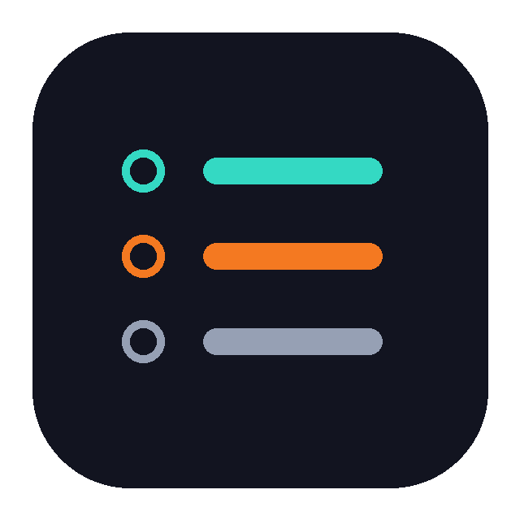

Find the Instagram accounts you follow who don't follow you back, with a paced manual flow that respects platform limits.
Follow Ledger answers a simple question, who do I follow that doesn't follow me back, without any of the sketchy patterns that usually come with follower-tracker tools. It never asks for your password. Instead it runs read-only inside your existing Instagram browser session, pages through your following and followers lists, and computes the difference.
The results render in Chrome's side panel, which stays open while you click through profiles, so you never lose your place. Results are cached locally, so reopening the panel is instant and avoids re-hitting Instagram's endpoints. When you are ready to act, a guided session opens each non-follower's profile in a compact window where Instagram's own unfollow button lives. Every unfollow is your own manual click. A short cooldown and a per-session soft cap keep the pace slow enough to avoid the action-blocks that Instagram issues for aggressive unfollowing, even when done by hand.
The interesting engineering is in the constraints. Instagram has no official API for this and blocks its profile pages from being embedded, so the tool works within those limits rather than around them. It handles pagination and rate limiting, backs off on throttling, and reports live progress through the extension's messaging layer.
Runs inside your own logged-in session. Nothing to hand over.
It reads your lists and computes the difference. It changes nothing on its own.
Every unfollow is your click, with a cooldown and a soft cap to protect your account.